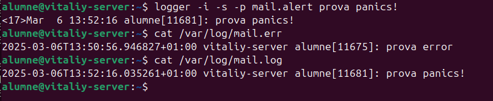
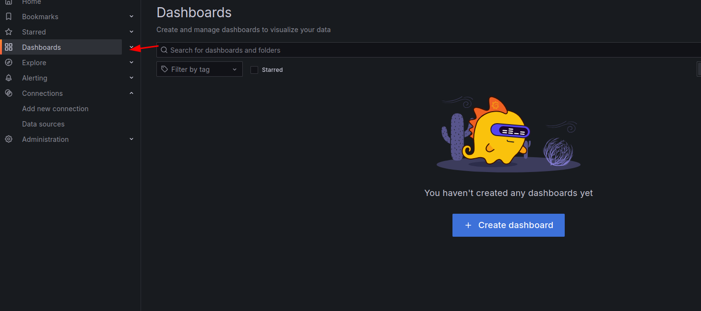

Monitoratge
Monitoratge i Logs
Els logs són registres que documenten totes les activitats i esdeveniments que ocorren en un sistema. Aquests fitxers recullen informació sobre el funcionament, errors, avisos i altres esdeveniments importants, i serveixen per:
- Diagnosticar problemes i errors del sistema.
- Monitoritzar el rendiment i el comportament dels serveis.
- Auditar activitats per detectar accessos no autoritzats o anomalies de seguretat.
- Ajudar en el desenvolupament i la depuració d'aplicacions.
Rotació i Gestió dels Logs
La major part dels logs es guarden a la carpeta /var/log, on cada servei o aplicació té el seu propi fitxer de registre. Aquests fitxers són essencials per monitoritzar el funcionament del sistema, detectar errors, auditar esdeveniments i identificar possibles amenaces de seguretat. A més, els logs segueixen una política de rotació predefinida, la qual permet conservar un historial dels logs antics sense que els fitxers es facin massa grans.
La rotació dels logs es pot programar o configurar editant el fitxer que conté les regles globals per a la gestió i rotació dels logs.
nano /etc/logrotate.conf
Si volem configurar una rotació específica per a algun log en concret, hem d'accedir al directori on es poden definir regles personalitzades per als diferents serveis o aplicacions.
cd /etc/logrotate.d/
Per exemple, la configuració d'Apache2 est programada perquè els seus logs es rotin cada 14 dies.
Analització de logs
Els logs es poden analitzar mitjançant eines bsiques com cat seguit de la ruta del log, però una eina molt més potent és journalctl. Aquesta eina permet consultar els esdeveniments del sistema amb filtres específics, com ara el rang de dates, utilitzant els parmetres --since i --until. Així, es poden visualitzar només els esdeveniments que t'interessen en un període determinat. Per exemple:
journalctl --since "09:00" --until "10:00"
Per veure els registres associats a un dispositiu, com un disc, es pot executar:
journalctl /dev/sda
Un altre exemple prctic és quan aturem un servei, com el de PostgreSQL, i volem analitzar els seus registres per identificar errors.
Normalment proporciona més informació que systemctl i facilita la recerca d'errors.
journalctl -xeu postgresql
Logs personalitzats
Amb logs personalitzats, podem modificar el comportament i les alertes dels logs del sistema segons les nostres necessitats. Això inclou canviar la configuració per defecte, definir com es gestionen els diferents tipus de logs i fins i tot enviar-los a un servidor centralitzat mitjançant eines com Samba o SCP. Tot i que configurar-ho manualment pot ser complex, una opció moderna és integrar-ho amb Grafana per visualitzar i analitzar la informació de manera centralitzada.
Per exemple, per modificar la configuració dels logs, pots editar el fitxer de configuració del rsyslog:
nano /etc/rsyslog.d/50-default.conf
Així pots canviar la destinació dels logs, els filtres o les alertes assignades a cadascun.
Per simular un error de mail i comprovar on es guarda aquest log, pots executar la comanda:
logger -i -s -p mail.err prova error
Aquesta comanda envia un missatge d'error amb la prioritat mail.err, i automticament apareixer registrat al log corresponent.
Observa que el missatge es registra en mail.err i no en mail.log, ja que cada tipus de log est assignat a una destinació específica. Aquesta configuració es pot modificar segons els requisits del sistema.

Si, en canvi, executem la mateixa comanda amb la prioritat mail.alert, el missatge no apareixer a mail.err sinó que s'enregistrar a mail.log. Això demostra com es poden redirigir els logs segons el seu nivell d'alerta.

Grafana, Loki, Promtail
En aquest apartat t'explicaré les parts més importants d'un sistema de monitoratge centralitzat de logs utilitzant Grafana, Loki i Promtail.
- Grafana és l'eina de visualització que permet crear dashboards interactius per analitzar les dades.
- Loki és el sistema d'agregació de logs, dissenyat per emmagatzemar i indexar els logs de manera eficient.
- Promtail és l'agent que s'executa als clients per recollir els logs (per exemple, des de /var/log) i enviar-los a Loki.
Instal·lació de Grafana
Per instal·lar Grafana al servidor, es fa el següent procés:
sudo apt install -y software-properties-common
S'afegeix el repositori oficial de Grafana:
sudo add-apt-repository "deb https://packages.grafana.com/oss/deb stable main"
Afegir la clau GPG per verificar la integritat dels paquets:
wget -q -O - https://packages.grafana.com/gpg.key | sudo apt-key add -
Instal·lar Grafana:
sudo apt install -y grafana
Habilitar i iniciar el servei de Grafana:
sudo systemctl enable grafana-server
sudo systemctl start grafana-server

Per comprovar que Grafana est funcionant, accedeix a la seva interfície web des del navegador amb:
http://<IP-del-servidor>:3000

Instal·lar Loki al servidor Ubuntu
Per configurar Loki, que és l'eina d'agregació de logs, s'ha de fer el següent:
Descarregar l'última versió de Loki:
wget https://github.com/grafana/loki/releases/latest/download/loki-linux-amd64.zip
Descomprimir l'arxiu descarregat:
unzip loki-linux-amd64.zip
Moure l'executable al directori /usr/local/bin:
sudo mv loki-linux-amd64 /usr/local/bin/loki
Assignar permisos d'execució:
sudo chmod +x /usr/local/bin/loki
Crear el fitxer de configuració en format YAML. Hi ha molts exemples disponibles a Internet o a la pgina oficial. Per exemple, crea o edita el fitxer:
nano /etc/loki-config.yaml

Creació del daemon de Loki
Per gestionar Loki com un servei de systemd, es configura un daemon.
Descarregar i preparar Loki (pas similar al descrit anteriorment):
wget https://github.com/grafana/loki/releases/latest/download/loki-linux-amd64.zip
unzip loki-linux-amd64.zip
sudo mv loki-linux-amd64 /usr/local/bin/loki
sudo chmod +x /usr/local/bin/loki
Crear el fitxer de servei per Loki:
sudo nano /etc/systemd/system/loki.service
Configura aquest fitxer per definir com s'executar Loki com a servei. Un cop creat el servei, cal assignar els permisos i crear els directoris necessaris segons la configuració del servei.
Finalment, per activar el servei de Loki:
sudo systemctl daemon-reload
sudo systemctl enable loki
sudo systemctl start loki
Comprova que Loki s'ha iniciat correctament:
Client Promtail
Promtail és l'agent que s'executa als clients per recollir els logs (per exemple, des de /var/log) i enviar-los a Loki per a la seva agregació i posterior visualització a Grafana. A continuació, es mostra com instal·lar i configurar Promtail:
Descarrega l'última versió de Promtail:
wget https://github.com/grafana/loki/releases/latest/download/promtail-linux-amd64.zip

Descomprimeix l'arxiu descarregat:
unzip promtail-linux-amd64.zip
Mou l'executable a /usr/local/bin:
sudo mv promtail-linux-amd64 /usr/local/bin/promtail
Assigna permisos d'execució:
sudo chmod +x /usr/local/bin/promtail
Edita el fitxer de configuració de Promtail per definir quins logs recollir i on enviar-los (normalment la URL del servidor on s'executa Loki):
sudo nano /etc/promtail-config.yaml
Crea el directori necessari per a Promtail (on s'emmagatzemaran dades temporals o altres fitxers de suport):
sudo mkdir -p /var/lib/promtail
Crea el fitxer de servei de systemd per executar Promtail com a servei:
sudo nano /etc/systemd/system/promtail.service

Posa el servei en marxa carregant la nova configuració, habilitant i iniciant el servei, i comprovant el seu estat:
sudo systemctl daemon-reload
sudo systemctl enable promtail
sudo systemctl start promtail
sudo systemctl status promtail
Finalment, dona els permisos necessaris al directori de Promtail per assegurar que l'usuari nobody tingui accés, cosa que pot ser important per a la seguretat i el correcte funcionament:
sudo chown -R nobody:nogroup /var/lib/promtail
sudo usermod -a -G adm nobody
sudo systemctl restart promtail
Configuració de Grafana + Loki
Un cop Grafana est instal·lat i Loki est recopilant els logs, accedeix a Grafana des del navegador amb la URL:
http://localhost:3000
(o bé amb la IP del servidor).
A l'apartat Explore de Grafana pots crear consultes per filtrar i analitzar els logs en temps real. Això et permet cercar esdeveniments específics, com per exemple errors, avisos o intents fallits entre altres.
Executa una query per veure com es carreguen automticament els logs:
Pots afegir filtres per cercar paraules clau com "Failed" o altres termes rellevants per detectar incidències:
Per exemple, pots crear una query específica per filtrar els warnings:
Grafana també permet crear dashboards personalitzats que mostren grfics amb els logs o alertes importants. Aquests dashboards faciliten la visualització i interpretació de la informació:

Un cop afegiu els parmetres a la query, apareixer un grfic que resumeix els logs segons els criteris definits:
Un exemple de Grafana totalment configurat amb Loki per a connexions SSH.
A més, Grafana té la capacitat de configurar alertes per correu electrònic. Aquesta funcionalitat és molt útil en entorns de producció per notificar-te automticament quan algun servei, com ara Apache, deixa de respondre o s'atura.
Per configurar les alertes per email, has de seguir aquests passos:
- Dirigir-te a l'apartat Alerts i crea un Contact Point.
- Abans, cal configurar el fitxer
.inide Grafana per definir les opcions d'enviament de correus.
Pots consultar la documentació oficial per configurar el SMTP aquí.
Per fer una prova, envia un correu de "prova" i comprova que arriba correctament:
Finalment, pots configurar una alerta per, per exemple, notificar-te si el servidor d'Apache no respon durant 1 minut o s'atura. Així, en cas d'incidència, Grafana et notificar via email.
I el correu d'alerta s'enviar avisant que el servei s'ha aturat:
Si es resol la incidència també t'avisar.